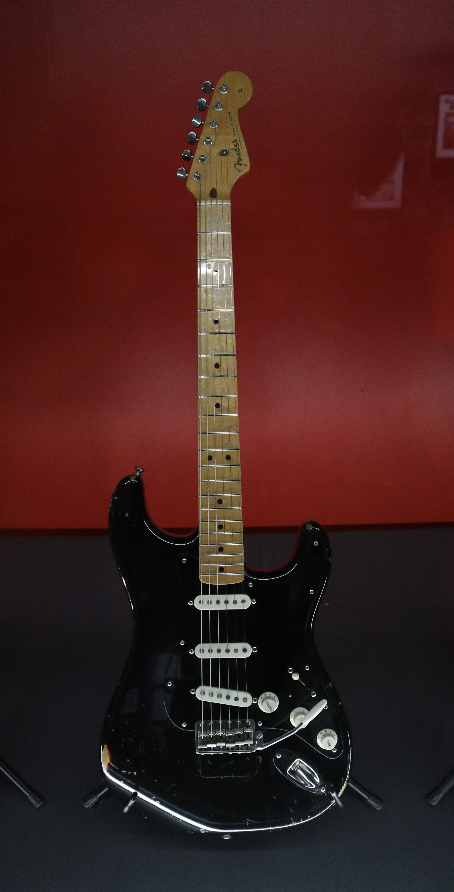

Build Your Dream Guitar

Welcome to the Custom Guitar Builder. This website lets you explore different guitar parts and create a guitar based on your personal style and sound.
You can choose different body styles, pickups, hardware, necks, and finishes to create a guitar that fits the way you want to play.
Choose Your Guitar Parts
- Guitar Body
- Pickups
- Neck
- Hardware
- Finish
Guitar Body
Choose a guitar body style that matches the look and feel you want for your instrument.
Pickups
Pickups have a major effect on the sound of an electric guitar. Choose pickups based on the type of music you enjoy.
Finish
Select a finish and color to give your guitar its own unique appearance.
Guitar Parts Information
| Guitar Part | Purpose |
|---|---|
| Pickups | Control the guitar's sound |
| Neck | Holds the frets and fingerboard |
| Body | Holds the electronics and bridge |
About the Guitar Builder
Building a custom guitar allows musicians to combine different features to create an instrument that fits their playing style.
This website is designed to help guitar players explore different options and learn more about the parts that make up an electric guitar.